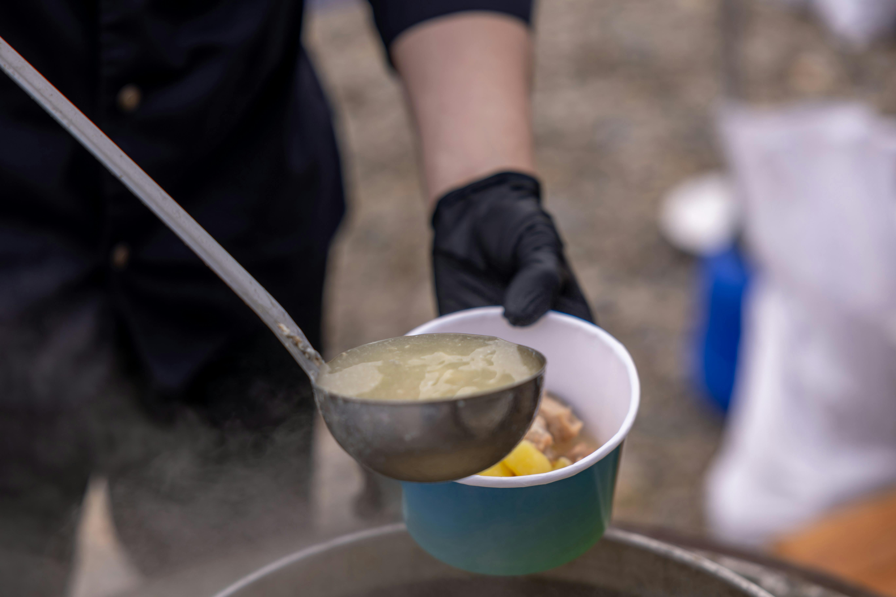
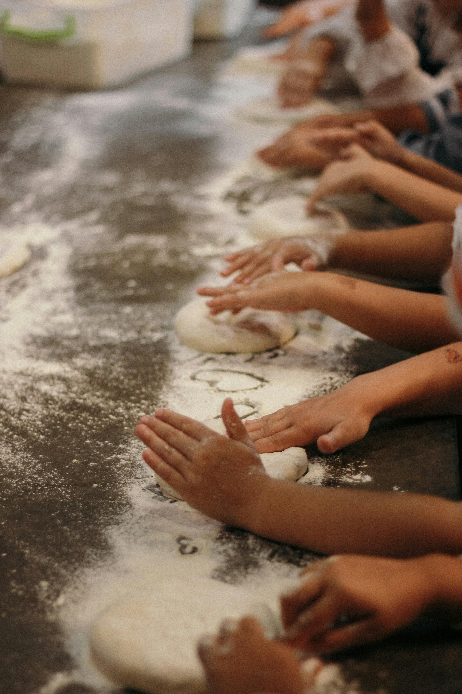

Our Impact Initiatives
Discover how RescueMark is tackling food waste and hunger through our key programs. Click on each initiative to learn more.



Interested in Making a Bigger Impact?
If you're considering a large contribution, corporate sponsorship, or an ongoing partnership,
we welcome you to connect with us directly.
Large donations help us scale our impact — expanding food rescue routes, supporting refrigerated transport,
and growing our network of trusted charity partners across South Africa. Together, we can reduce waste, feed more
communities, and drive long-term change.